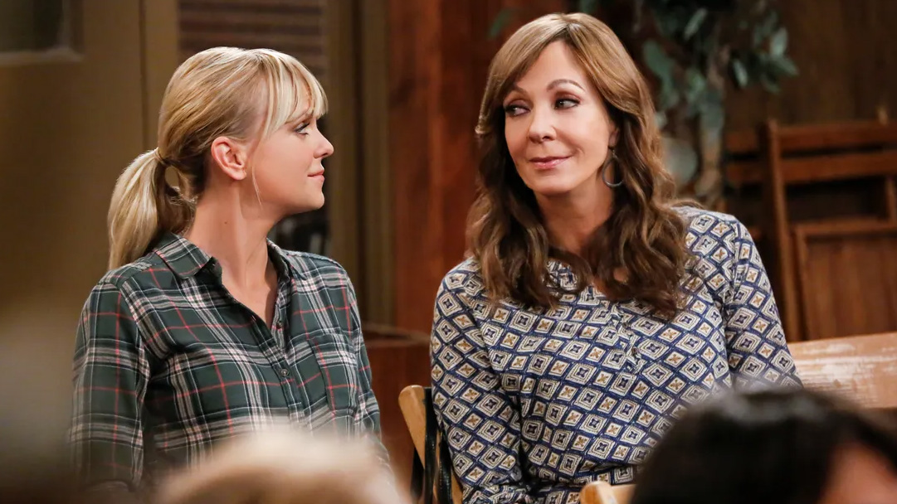
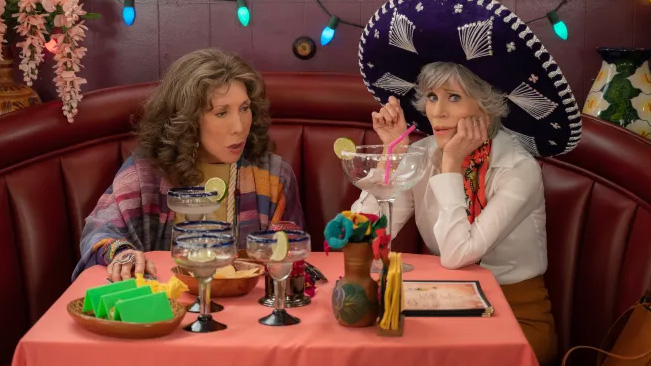
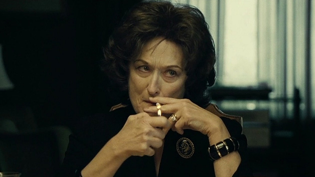
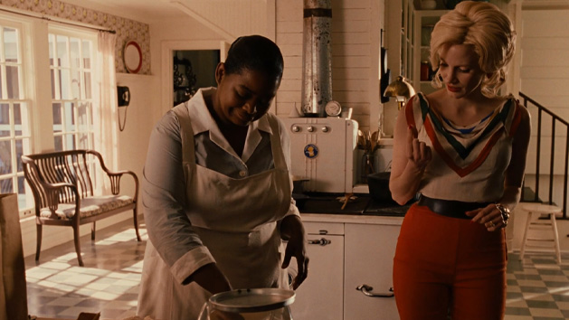
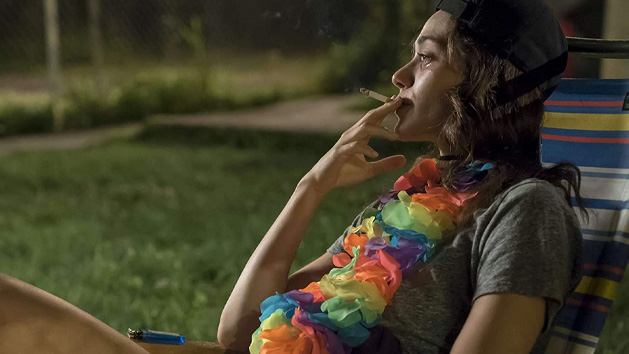

Jack's Viewing Room
Required viewing for high-comfort visual escapes.

Chuck Lorre’s Finest Work
I love this show because it’s simple to put on in the background when writing if I don’t want to listen to music while crafting a scene. It offers auditory fulfillment without interfering with my focus on the book I’m working inside. Anna Faris and Allison Janney have a wittingly-perfect chemistry on set, I almost feel the role of Bonnie Plunkett being cast anyone besides Janney would have been a major disservice to American primetime entertainment.

Fonda and Tomlin—Sisters in Crime as Always
Grace and Frankie, combined with their episodic shenanigans couldn’t pull me out of any deeper funk I find myself in. It’s a perfect low-stakes binge watch, or again, to have on in the background while completing tasks and chores. Just be sure you store that yam lube in the fridge or Frankie Bergstein will have a bone to pick with you!

My #1 Favorite Movie
If you’re anything like me, you know what a dysfunctional family looks, feels, and sounds like. But Terry Letts screenplay being given the silver screen bridges powerhouses like Julia Roberts and Meryl Streep, and Margot Martindale into one tragically beautiful, sometimes comedic, oftentimes on-the-edge-of-your-seat angsty narrative. Be sure to have nothing going on while viewing, because this is a movie that requires some attention to nuance.

Tied @ 2nd Place for My Top 5 Fave Movies
Back in a time when African Americans weren’t afforded the luxuries of American class society, they had to come up with their own batch of fun and trouble. This film dives into the complexities of that time period while weaving together a funny, heart-rending plot that will leave you dabbing your eyes with tissues and covering your mouth in shock because, yes, they GO “THERE.” Avoid Minny Jackson’s famous chocolate pie.
Campy, Fun, Inspiring—All Wrapped into One!
This film struck me with awe over the summer while recovering from neck surgery. The constant evanescence of the film’s musical integration and ethereal, icelandic pop sounds make for a truly immersive viewing experience. And it has Will Ferrell, so it’s naturally good to watch when you need a mood lift.

Chaos, Conning, and Comedy
This is a show that’s not going to be everyone’s cup of tea. Writer Jon Wells (ER) isn’t afraid to go where any other creator is scared to go—the politically incorrect, irreverent aesthetic of Southside Chicago. Webbing chaotic family dynamics that puts Joan Crawford in the seat for Mother of the Year, Shameless is about sticking together with your crew and surviving the obstacles of life together. There will be bumps along the way, some windfalls, and lots of grit. This show holds nothing back. This is one of those shows I must binge the whole series once a year just for personal fulfillment.